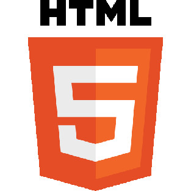
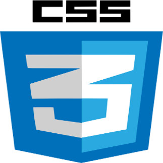
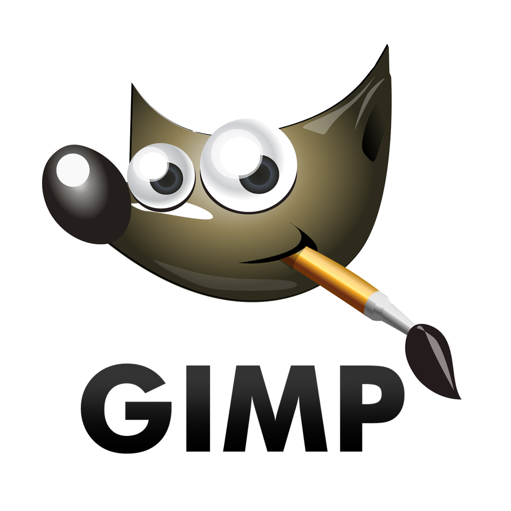
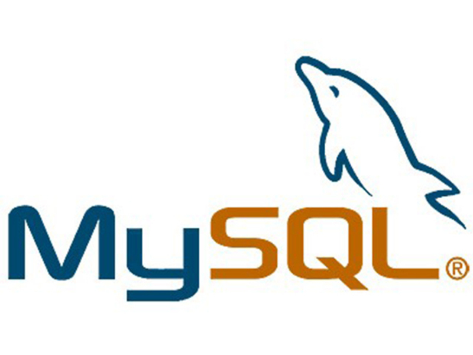

Johanna Bouzige
19 ans, Ales
permi B, vehiculé
Contact
GitHub
Page Facebook "JoyArt"
CV - Webdesigner, intergratrice Web, Illustratrice
Experience et formations
Brevet des colleges
A travailler en tant qu'illustratrice dans un ouvrage intituler
"Camarade entends-tu?"
de 2012 à 2013.
A participer à l'elaboration d'une
exposition
en tant que portraitiste sur la resistance en 2015.
2016-2017 pendant 6 mois, dans la formation Coda by Simplon
Webdesign / integration HTML et CSS responsive
Competences Web
aquie



(Notion)

competences
Le dessins en particulier en portrait, tatouage, paysage, ( crayon, pastel, aquarelle, peinture acrylique )
Le travail manuel ( dessins, sculture, restauration de mobilier)
perfectioniste, perseverante, aime apprendre, autonome.
Aime aussi travailler en equipe, la collaboration ne me fait pas peur :)
Passions
L'art, le travail manuel
la science,(nouvelle technologie)
les jeux video
la musique.
Le web (premier site vitrine en autodidacte en 2016)